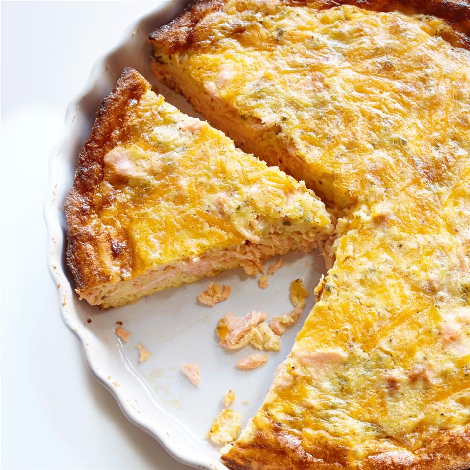

Eggs Benedict Casserole

A little history about this dish
fahsetjdxdfgdjhfdgdhdfh XD
Ingredients:
- 1 (8 ounce) package Cheddar cheese, cubed
- ¼ onion, diced
- 4 eggs
- 1 (12 fluid ounce) can evaporated milk
- 1 pinch salt
- 1 pinch ground black pepper
- 1 pinch garlic powder
- 1 pinch dried parsley
- 1 pinch dried sage
- 1 (14.75 ounce) can salmon, drained, flaked and bones removed
- 1 (9 inch) frozen pie crust
- ½ cup shredded Cheddar cheese, divided
Steps
- Preheat an oven to 375 degrees F (190 degrees C).
- Place 8 ounces of cubed Cheddar cheese, onion, eggs, and evaporated
milk into a blender. Season with salt, pepper, garlic powder,
parsley, and sage, then blend until smooth. Spread salmon over
the pie crust. Sprinkle 1/4 cup of shredded Cheddar cheese then pour
the egg mixture on top. Top with the remaining 1/4 cup of shredded
Cheddar cheese.
- Bake in the preheated oven until a toothpick inserted into the
center comes out clean, about 30 minutes.
Back to main page